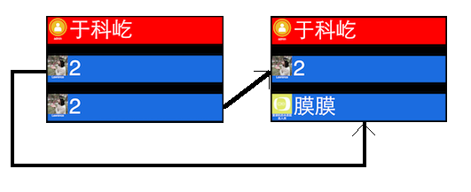

吕梦扬
2014013452
lmy1229@126.com
基础要求
提高要求
socket.io连接Websocket,接受new message和admin事件,并分别处理.jQuery来完成一些基本的选择器和动画.Vue.js,将网页上的3个显示条的数据(昵称和文本内容)绑定到js中的数据.于是每次接收到WebSocket的事件,只需要修改Vue中的数据即可完成网页上的数据的更新.String.prototype中添加一个方法width(font),用来计算一个字符串在font这个字体设置下的显示宽度.具体实现方法为: 使用jQuery创建一个div节点包含这个字符串,设置div的字体设置,并设置透明显示,然后将这个节点添加到$('body')上,使用jQuery的.width()来获取这个div的宽度.这就是结果.最后将这个节点再删掉.(来源)width函数获取它的宽度, 如果不是特别宽,则设置Vue中的一个变量show为true,表示静态显示这个消息,否则设show为false,表示滚动播放这个消息.v-if和v-else属性绑定到show变量中.show为true表示显示前者,false表示显示后者.new message事件后完成的任务有:
admin后,为了实现admin能够在顶端保持一定时间不被新的普通消息覆盖,需要设置一个计时器.因此接收到事件后,需要做的事情有:
contentAtIndex,contentAtIndex[i]表示在屏幕上显示的第i条实际是DOM元素中的第几个.start为1,否则定义初始点为0.contentAtIndex[start]的DOM元素使用CSS动画移动到最后一条的位置, 然后将之后的元素依次向前移动一个位置.如下图
.marquee的标签jQuery的get函数,在页面被加载时,向服务器请求3个历史数据,并且显示在页面上background: url('loading.gif') 50% no-repeat;,使得当一个img没有设置src属性时,能够显示背景图片为一个正在加载的gif.onload事件中,将url赋给页面中的img的src属性.src属性,浏览器就会直接加载图片而不再下载(因为这张图片已经被im对象下载好了).